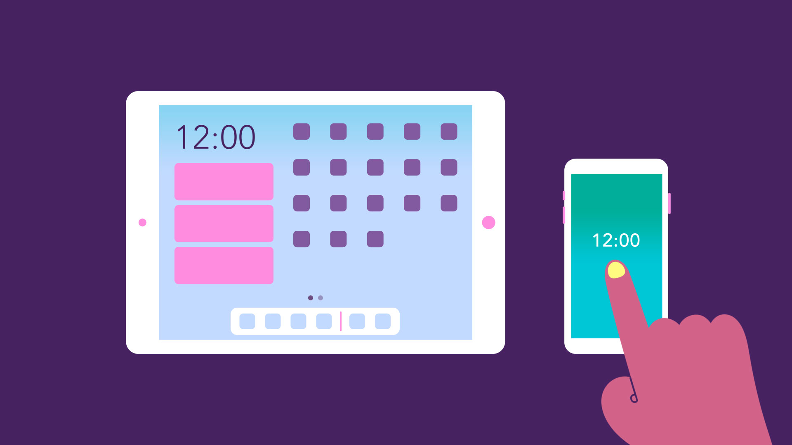

Computer Basics: Understanding Operating Systems
What is an operating system?
An operating system is the most important software that runs on a computer. It manages the computer's memory and processes, as well as all of its software and hardware. It also allows you to communicate with the computer without knowing how to speak the computer's language. Without an operating system, a computer is useless.
The operating system's job
Your computer's operating system (OS) manages all of the software and hardware on the computer. Most of the time, there are several different computer programs running at the same time, and they all need to access your computer's central processing unit (CPU), memory, and storage. The operating system coordinates all of this to make sure each program gets what it needs.
Types of operating systems
Operating systems usually come pre-loaded on any computer you buy. Most people use the operating system that comes with their computer, but it's possible to upgrade or even change operating systems. The three most common operating systems for personal computers are Microsoft Windows, macOS, and Linux.
Modern operating systems use a graphical user interface, or GUI (pronounced gooey ). A GUI lets you use your mouse to click icons, buttons, and menus, and everything is clearly displayed on the screen using a combination of graphics and text.
Each operating system's GUI has a different look and feel, so if you switch to a different operating system it may seem unfamiliar at first. However, modern operating systems are designed to be easy to use, and most of the basic principles are the same.
Microsoft Windows
Microsoft created the Windows operating system in the mid-1980s. There have been many different versions of Windows, but the most recent ones are Windows 10 (released in 2015), Windows 8 (2012), Windows 7 (2009), and Windows Vista (2007). Windows comes pre-loaded on most new PCs, which helps to make it the most popular operating system in the world.

macOS
macOS (previously called OS X ) is a line of operating systems created by Apple. It comes preloaded on all Macintosh computers, or Macs. Some of the specific versions include Mojave (released in 2018), High Sierra (2017), and Sierra (2016).
According to StatCounter Global Stats, macOS users account for less than 10% of global operating systems—much lower than the percentage of Windows users (more than 80% ). One reason for this is that Apple computers tend to be more expensive. However, many people do prefer the look and feel of macOS over Windows.
Linux
Linux (pronounced LINN-ux ) is a family of open-source operating systems, which means they can be modified and distributed by anyone around the world. This is different from proprietary software like Windows, which can only be modified by the company that owns it. The advantages of Linux are that it is free, and there are many different distributions—or versions—you can choose from.
Operating systems for mobile devices
The operating systems we've been talking about so far were designed to run on desktop and laptop computers. Mobile devices such as phones, tablet computers, and MP3 players are different from desktop and laptop computers, so they run operating systems that are designed specifically for mobile devices. Examples of mobile operating systems include Apple iOS and Google Android. In the screenshot below, you can see iOS running on an iPad.
Operating systems for mobile devices generally aren't as fully featured as those made for desktop and laptop computers, and they aren't able to run all of the same software. However, you can still do a lot of things with them, like watch movies, browse the Web, manage your calendar, and play games.
Computer Basics: Understanding Applications
What is an application?
You may have heard people talking about using a program, an application, or an app. But what exactly does that mean? Simply put, an app is a type of software that allows you to perform specific tasks. Applications for desktop or laptop computers are sometimes called desktop applications, while those for mobile devices are called mobile apps.
When you open an application, it runs inside the operating system until you close it. Most of the time, you will have more than one application open at the same time, which is known as multi-tasking.
App is a common term for an application, especially for simple applications that can be downloaded inexpensively or even for free. Many apps are also available for mobile devices and even some TVs.
Desktop applications
There are countless desktop applications, and they fall into several categories. Some are more full featured (like Microsoft Word ), while others may only do one or two things (like a clock or calendar app). Below are just a few types of applications you might use.
> Word processors: A word processor allows you to write a letter, design a flyer, and create many other types of documents. The most well-known word processor is Microsoft Word.

> Web browsers: A web browser is the tool you use to access the Internet. Most computers come with a web browser pre-installed, but you can also download a different one if you prefer. Examples of browsers include Internet Explorer, Mozilla Firefox, Google Chrome, and Safari.

> Media players: If you want to listen to MP3s or watch movies you've downloaded, you'll need to use a media player. Windows Media Player and iTunes are popular media players.
> Games: There are many types of games you can play on your computer. They range from card games like Solitaire to action games like Halo. Many action games require a lot of computing power, so they may not work unless you have a newer computer.
Mobile apps
Desktop and laptop computers aren't the only devices that can run applications. You can also download apps for mobile devices like smartphones and tablets. Here are a few examples of mobile apps.
> Gmail: You can use the Gmail app to easily view and send emails from your mobile device. It's available for Android and iOS devices.
> Instagram: You can use Instagram to quickly share photos with your friends and family. It's available for Android and iOS.
> Duolingo: With a combination of quizzes, games, and other activities, this app can help you learn new languages. It's available for Android and iOS.
Installing new applications
Every computer and mobile device will come with some applications already built in, such as a web browser and media player. However, you can also purchase and install new apps to add more functionality. You can review our lessons on Installing Software on Your Windows PC, Installing Software on Your Mac, and Free Software to learn more.